พารามิเตอร์:
แบตเครื่องปั่นไฟ: 72V 100Ah (7.2 kWh)
ประสิทธิภาพ η: 70%
MG ZS EV: 50.3 kWh
RD6: 63 kWh
ค่าไฟ: 4.5 บาท/kWh
1. ค่าสูญเสียและการลดของแบตเตอรี่เครื่องปั่นไฟ
MG ZS EV (แบตรถ 50.3 kWh)
| กระแส | P ออก (kW) | E รถได้ (kWh) | E แบตใช้ (kWh) | Loss (kWh) | SOC ลด (%) | ประมาณการแบตหมด (ชม.) | รถ +SOC (%) |
|---|
| 8A | 1.85 | 1.846 | 2.638 | 0.791 | 36.6 | 2.73 | 3.7 |
| 10A | 2.30 | 2.298 | 3.283 | 0.985 | 45.6 | 2.19 | 4.6 |
| 13A | 2.97 | 2.962 | 4.231 | 1.269 | 58.8 | 1.70 | 5.9 |
| 16A | 3.62 | 3.613 | 5.161 | 1.548 | 71.7 | 1.39 | 7.2 |
Riddara RD6 (แบตรถ 63 kWh)
| กระแส | P ออก (kW) | E รถได้ (kWh) | E แบตใช้ (kWh) | Loss (kWh) | SOC ลด (%) | ประมาณการแบตหมด (ชม.) | รถ +SOC (%) |
|---|
| 8A | 1.85 | 1.846 | 2.637 | 0.791 | 36.6 | 2.73 | 2.9 |
| 10A | 2.30 | 2.298 | 3.283 | 0.985 | 45.6 | 2.19 | 3.6 |
| 13A | 2.97 | 2.962 | 4.232 | 1.269 | 58.8 | 1.70 | 4.7 |
| 16A | 3.61 | 3.613 | 5.161 | 1.548 | 71.7 | 1.40 | 5.7 |
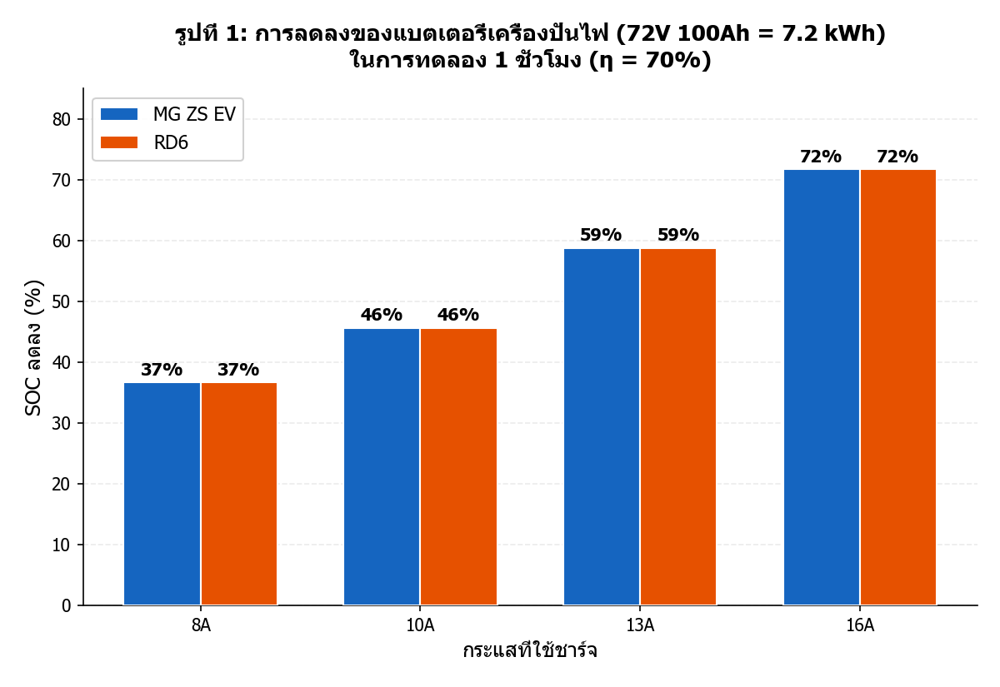
รูปที่ 1: SOC แบตเครื่องปั่นไฟลดลง (ทดลอง 1 ชม.)
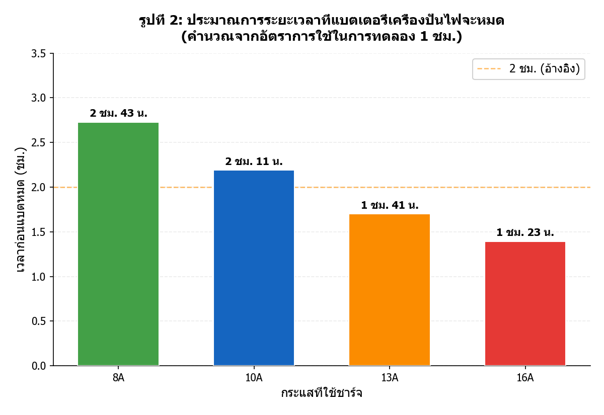
รูปที่ 2: เวลาก่อนแบตหมด
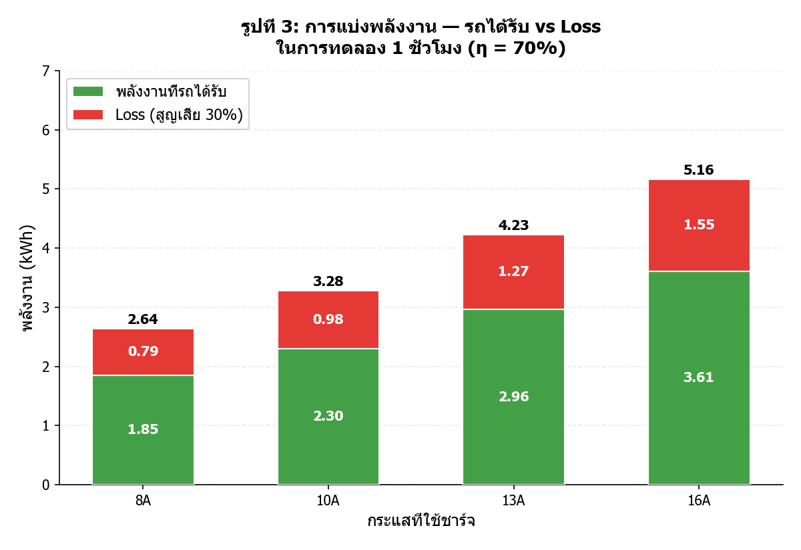
รูปที่ 3: พลังงานรถได้ vs Loss
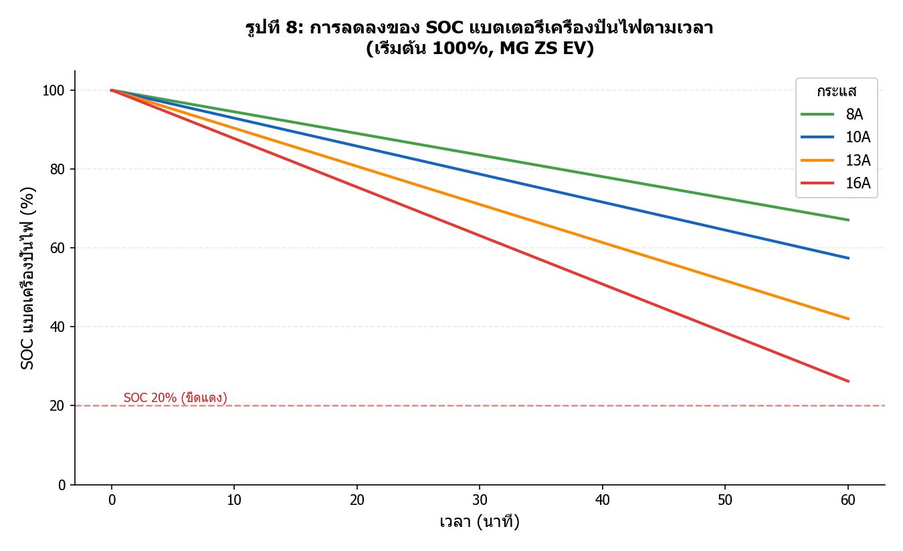
รูปที่ 8: SOC ลดตามเวลา
2. เปรียบเทียบ ไฟบ้าน vs เครื่องปั่นไฟ
| กระแส | ไฟบ้าน E (kWh) | ไฟบ้าน ราคา (บาท) | เครื่องปั่นไฟ Eเข้า (kWh) | เครื่องปั่นไฟ ราคา (บาท) | เพิ่ม (บาท) |
|---|
| 8A | 1.834 | 8.25 | 2.638 | 11.87 | +3.62 |
| 10A | 2.297 | 10.34 | 3.283 | 14.77 | +4.44 |
| 13A | 2.878 | 12.95 | 4.231 | 19.04 | +6.09 |
| 16A | 3.201 | 14.40 | 5.161 | 23.23 | +8.82 |
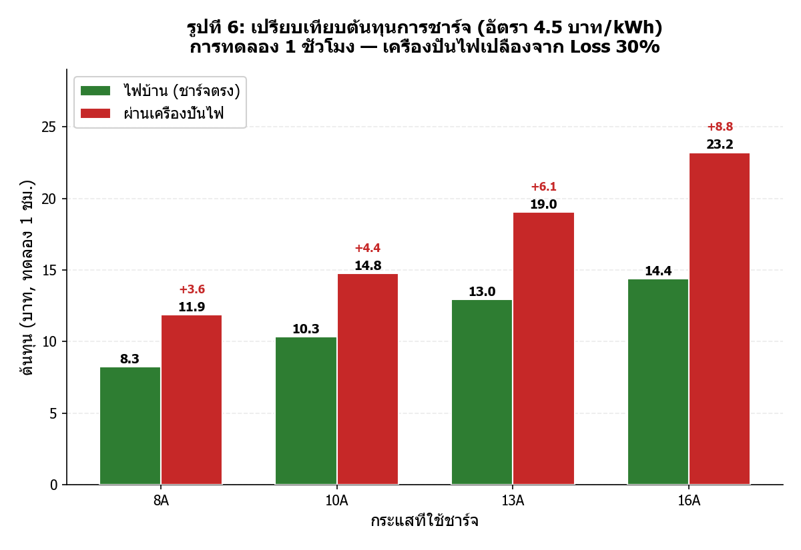
รูปที่ 6: เปรียบเทียบต้นทุน
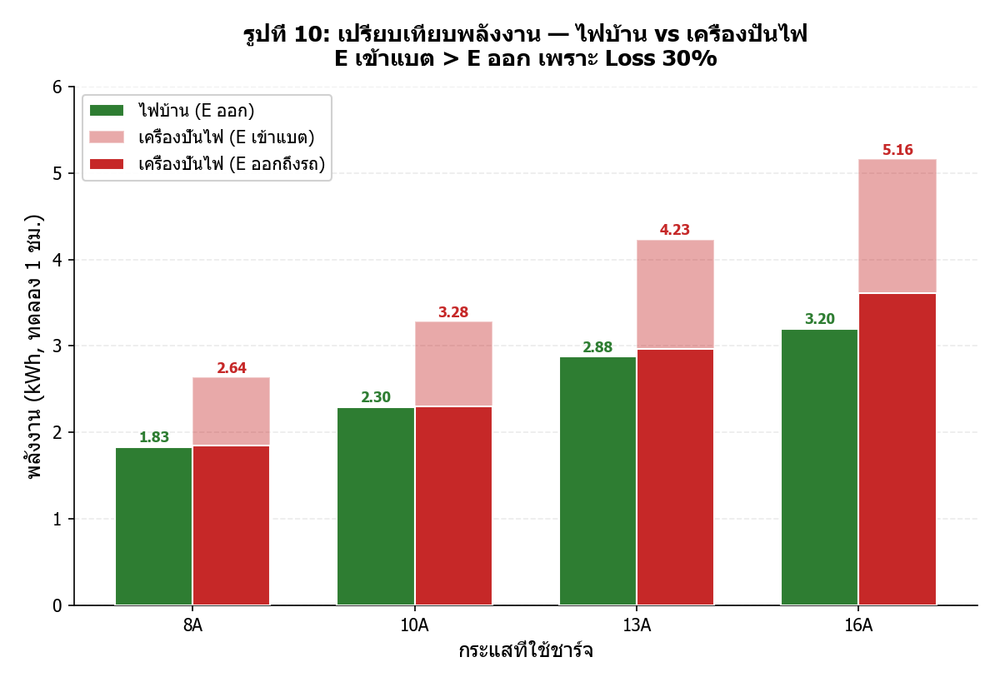
รูปที่ 10: พลังงาน E ออก vs E เข้า
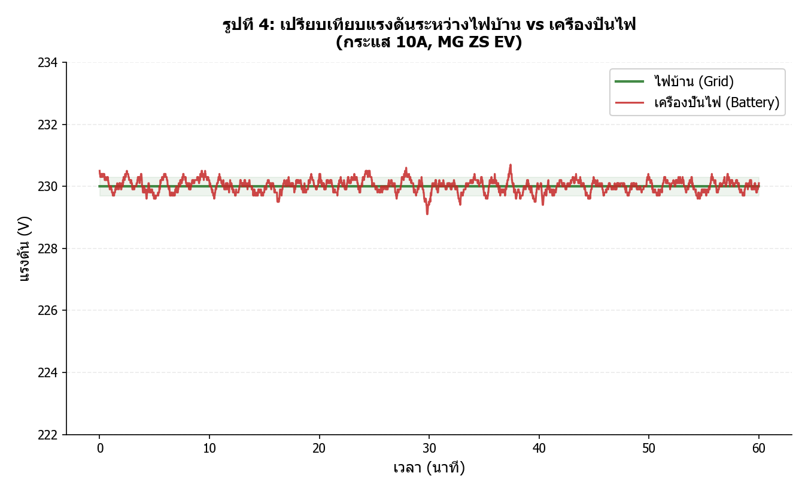
รูปที่ 4: แรงดัน ไฟบ้าน vs เครื่องปั่นไฟ (10A)
3. ลักษณะการทำงานของเครื่องปั่นไฟ
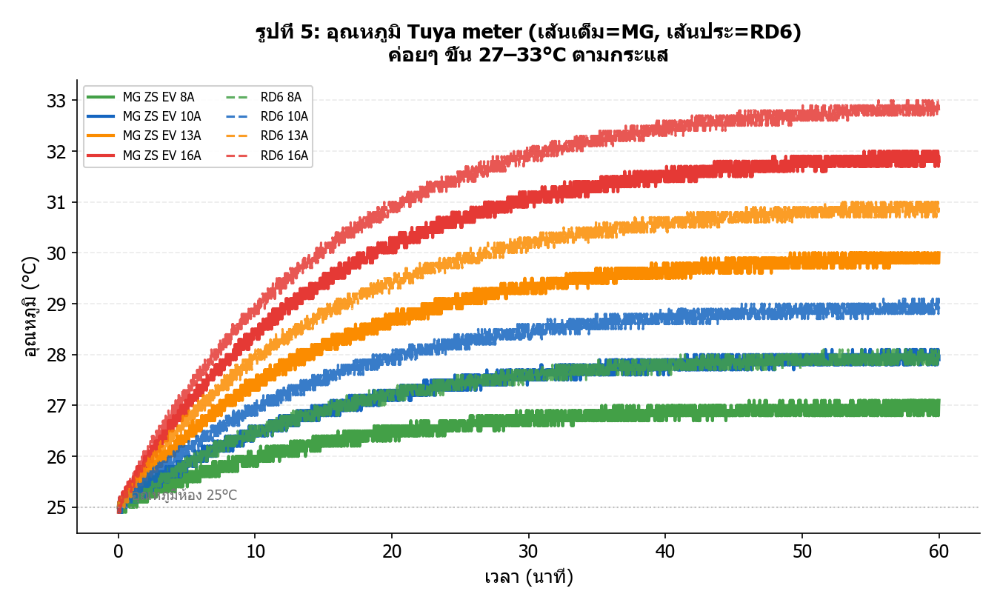
รูปที่ 5: อุณหภูมิเพิ่มตามกระแส
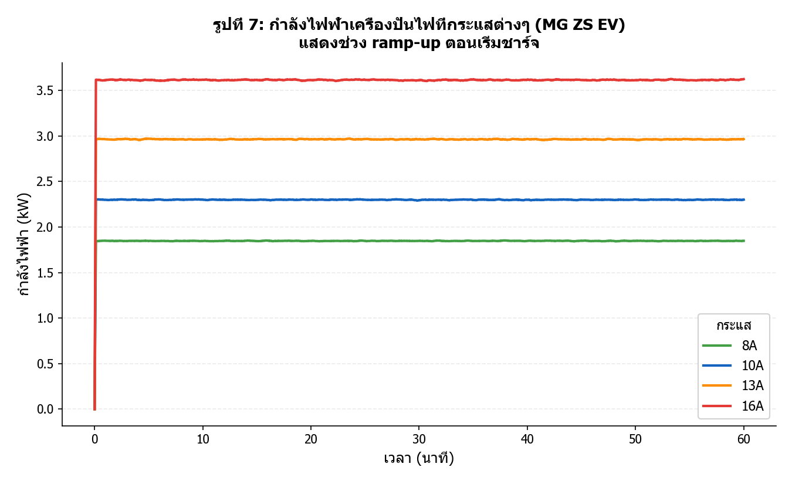
รูปที่ 7: กำลังไฟ + ramp-up
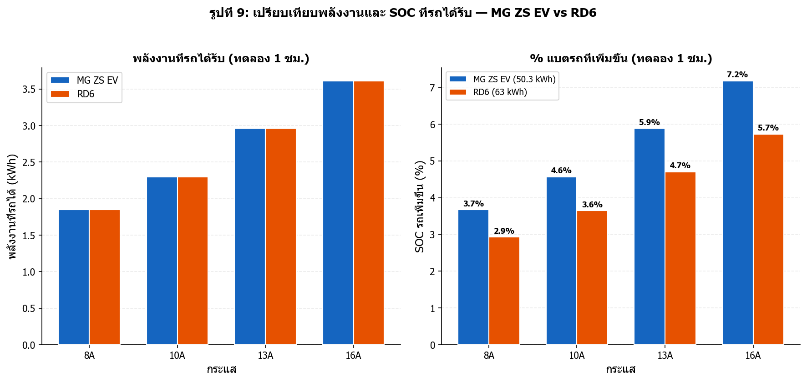
รูปที่ 9: MG ZS EV vs RD6
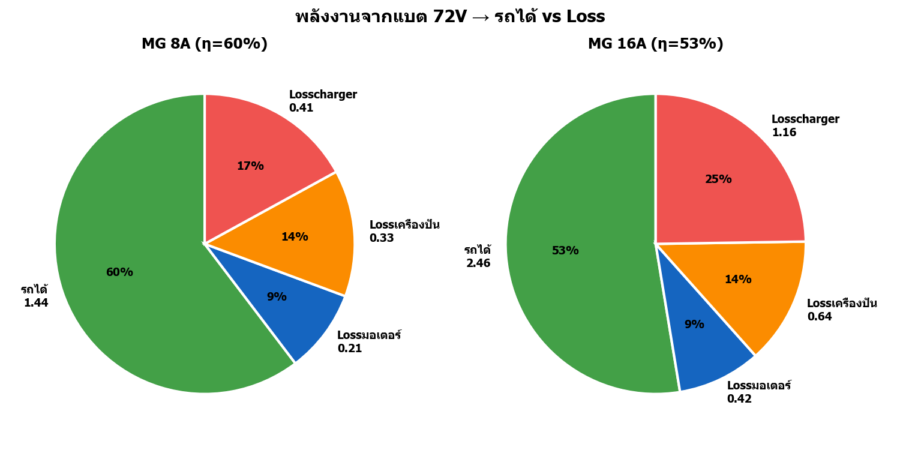
รูปที่ 11: สัดส่วนพลังงาน (16A)
4. สรุปข้อค้นพบ
ข้อค้นพบหลัก
- กระแสยิ่งสูง → แบตลดยิ่งเร็ว: ในการทดลอง 1 ชม.: 8A แบตลด 37%, 16A ลด 72%
- Trade-off: กระแสสูงชาร์จเร็วแต่แบตหมดเร็ว ต้องเลือกตามความเหมาะสม
- ชาร์จไม่เต็ม: แบต 7.2 kWh เทียบรถ (50-63 kWh) เหมาะใช้ฉุกเฉิน (เพิ่ม SOC รถ 3-7% ในทดลอง 1 ชม.)
- Loss 30% ทุกกระแส: แต่ Loss เป็น kWh เพิ่มตามกระแส (0.79 → 1.55 kWh)
- ต้นทุนเครื่องปั่นไฟสูงกว่า ~35-40%: เพราะ Loss 30% + ดึงพลังงานจากแบตมากกว่า
- แรงดันแกว่ง: ไฟบ้านเสถียร 230V ส่วนเครื่องปั่นไฟแกว่ง 225-232V + อุณหภูมิขึ้น 25→34-44°C